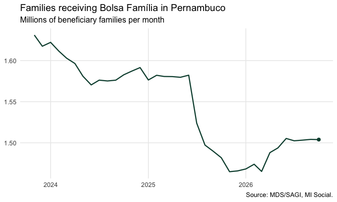
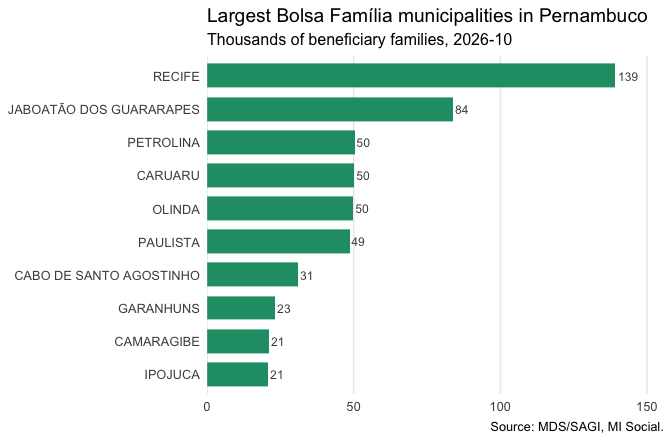

Real-world example: Bolsa Família in Pernambuco
Source:vignettes/bolsa-familia.Rmd
bolsa-familia.RmdIntroduction
This vignette walks through a realistic analysis with misocialr: the Bolsa Família programme in the state of Pernambuco — how many families receive the benefit, how much is transferred, and how that is distributed across municipalities.
Step 1 — Find the fields
The bolsa_familia theme of the dictionary says what is
available and what can be summed:
mds_fields("bolsa_familia")[, c("field", "label", "nature")]
#> # A tibble: 11 × 3
#> field label nature
#> <chr> <chr> <chr>
#> 1 qtd_familias_beneficiarias_bolsa_familia_i Famílias beneficiárias do … estoq…
#> 2 qtd_pessoas_beneficiarias_bolsa_familia_i Pessoas beneficiárias do B… estoq…
#> 3 valor_repassado_bolsa_familia_f Valor repassado às família… fluxo
#> 4 pbf_vlr_medio_benef_f Valor médio do benefício média
#> 5 familias_pbf_pobreza_i Famílias beneficiárias em … estoq…
#> 6 familias_pbf_extrema_pobreza_i Famílias beneficiárias em … estoq…
#> 7 pbf_qtd_familias_indigenas_benef_i Famílias indígenas benefic… estoq…
#> 8 pbf_qtd_benef_primeira_infancia_bpi_i Benefícios Primeira Infânc… estoq…
#> 9 pbf_qtd_benef_gestantes_i Benefícios a gestantes estoq…
#> 10 pbf_qtd_benef_7_a_17_anos_i Benefícios a crianças e ad… estoq…
#> 11 pbf_perc_familias_benef_rf_mulher_d Percentual de famílias ben… taxaWe will use the count of beneficiary families (estoque:
it can be summed across municipalities, not across months) and the value
transferred to them (fluxo: it can be summed across
both).
Step 2 — Retrieve three years of data
One call brings every municipality of Pernambuco ("PE")
for the last 36 months:
pbf <- mds_bolsa_familia(
periods = -36,
localities = "PE",
fields = c("qtd_familias_beneficiarias_bolsa_familia_i",
"valor_repassado_bolsa_familia_f")
)
pbf
#> # A tibble: 13,320 × 9
#> locality_id ibge_code locality_name state period field label unit value
#> <chr> <chr> <chr> <chr> <chr> <chr> <chr> <chr> <dbl>
#> 1 260005 2600054 ABREU E LIMA PE 202311 qtd_famil… Famí… Famí… 20443
#> 2 260005 2600054 ABREU E LIMA PE 202312 qtd_famil… Famí… Famí… 20073
#> 3 260005 2600054 ABREU E LIMA PE 202401 qtd_famil… Famí… Famí… 20144
#> 4 260005 2600054 ABREU E LIMA PE 202402 qtd_famil… Famí… Famí… 19882
#> 5 260005 2600054 ABREU E LIMA PE 202403 qtd_famil… Famí… Famí… 19700
#> 6 260005 2600054 ABREU E LIMA PE 202404 qtd_famil… Famí… Famí… 19455
#> 7 260005 2600054 ABREU E LIMA PE 202405 qtd_famil… Famí… Famí… 19311
#> 8 260005 2600054 ABREU E LIMA PE 202406 qtd_famil… Famí… Famí… 18993
#> 9 260005 2600054 ABREU E LIMA PE 202407 qtd_famil… Famí… Famí… 19034
#> 10 260005 2600054 ABREU E LIMA PE 202408 qtd_famil… Famí… Famí… 18998
#> # ℹ 13,310 more rowsThe API answers 0 for months not published yet, so the first thing to
do is remove that trailing tail. reference = "brazil"
decides from the whole country, which keeps legitimate zeros:
pbf <- mds_drop_unpublished(pbf, reference = "brazil")
range(pbf$period)
#> [1] "202311" "202610"Step 3 — The state series
Both fields have a nature that sums across municipalities, so the state total is a plain sum by month:
state <- pbf |>
summarise(value = sum(value), .by = c(period, field)) |>
mutate(month = as.Date(paste0(period, "01"), "%Y%m%d"))
families <- filter(state,
field == "qtd_familias_beneficiarias_bolsa_familia_i")
ggplot(families, aes(month, value / 1e6)) +
geom_line(color = "#0b4d3c", linewidth = 0.8) +
geom_point(data = slice_tail(families, n = 1),
color = "#0b4d3c", size = 2) +
scale_y_continuous(labels = scales::label_number(accuracy = 0.01)) +
labs(
title = "Families receiving Bolsa Família in Pernambuco",
subtitle = "Millions of beneficiary families per month",
x = NULL, y = NULL,
caption = "Source: MDS/SAGI, MI Social."
) +
theme_minimal(base_size = 12) +
theme(panel.grid.minor = element_blank())
Step 4 — Value per family, municipality by municipality
For the latest published month, put the two fields side by side and compute the average transfer per family:
latest <- max(pbf$period)
per_family <- pbf |>
filter(period == latest) |>
pivot_wider(id_cols = c(ibge_code, locality_name),
names_from = field, values_from = value) |>
mutate(value_per_family =
valor_repassado_bolsa_familia_f /
qtd_familias_beneficiarias_bolsa_familia_i)
summary(per_family$value_per_family)
#> Min. 1st Qu. Median Mean 3rd Qu. Max.
#> 743.1 767.7 777.2 777.7 786.5 815.5The ten municipalities with the most beneficiary families:
top10 <- per_family |>
slice_max(qtd_familias_beneficiarias_bolsa_familia_i, n = 10) |>
mutate(locality_name = reorder(locality_name,
qtd_familias_beneficiarias_bolsa_familia_i))
ggplot(top10,
aes(qtd_familias_beneficiarias_bolsa_familia_i / 1e3,
locality_name)) +
geom_col(fill = "#209b74", width = 0.72) +
geom_text(aes(label = scales::label_number(accuracy = 1,
big.mark = ",")(
qtd_familias_beneficiarias_bolsa_familia_i / 1e3)),
hjust = -0.15, size = 3.2, color = "grey30") +
scale_x_continuous(expand = expansion(mult = c(0, 0.12))) +
labs(
title = "Largest Bolsa Família municipalities in Pernambuco",
subtitle = paste0("Thousands of beneficiary families, ",
format(as.Date(paste0(latest, "01"), "%Y%m%d"),
"%Y-%m")),
x = NULL, y = NULL,
caption = "Source: MDS/SAGI, MI Social."
) +
theme_minimal(base_size = 12) +
theme(panel.grid.major.y = element_blank(),
panel.grid.minor = element_blank())
Step 5 — Keep the provenance
Every retrieval records when it was made, which is worth keeping next to any published figure:
attr(pbf, "retrieved_at")
#> [1] "2026-10-20 11:34:57 -03"Where to go next
-
vignette("getting-started")for the basic workflow. -
vignette("api-concepts")for what a document, a facet and an unpublished month are. -
mds_fields()for the other six themes: Cadastro Único, BPC, the SUAS network and its funding, conditionalities and food security.